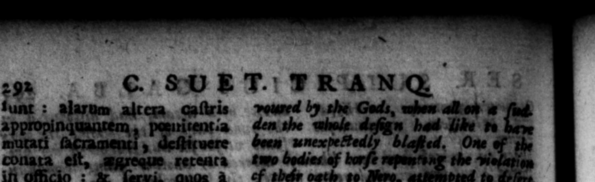

9 paratos Muner * 1 crimiua mors Vindicis, qua 5 maxime. caunſternatis, dejti- | ] tutoque fanilis non multum alifuit quin vita renunt iaret. Sed ſupervenientibus ab urbe nuntiis, ut occiſum cunctoique in terbha ſua juraſſe cotzuovit : geoſita, LEGATI, ſuſcepic C KS ARIS appellationem, Lcer iuzreſſus eft-paladarns, ac ndente a cervicibus pugio. ne a ute pectus, neo prius uſum. toga recupera vit quam oypreſſis, qui nov as res moliebantur, præfecto - preterii Nymphidio Sabmo, —— in ia, Fontejo Capitone : in Africa, Clodio MaCrog tis. | 12. at de eo fama ſevitie ſimul atque avaritiæ: arum Galliarumque, que cunc. rantins ſibi acceſſerant, gravionbus tributis, guaſdam et iam muorum deſtrictione puniſſer : & præ ho ſitos procuratoreſique ſupplicio capitis affeↄiſſet cam conjugihus ac likeris : quodque obtaram a Tarraconenſibus & verere templo jovis coronam auream librarum 4 uinuecim conflallec ac tres vncks qua ponder deerant, juſliiſet exigi. Ea in balneas 5 n 18 1. Apceſſit ad tanta ditfrom 5 neck before his 4, who . bis ſettlement, wore Tig * civitates Kaſpani. 4 Gand, for nor coming 45 & "firmed and _— as ſoon as tbe 7 fan * . hed ſworn to him as K 4 aſide t be title of Livetenant, and took upon him that of Caeſar. And putting 1 — — his march with bis gene e or es not "reſume the uſe of the" Toa, till Ny dins Sabinus commander of the \ he laid guards at Rome, with ihe two liew tenants Fonttins to in G-rmany and Claudius Macer in 12. 4 Rue ef bis cruelty and 4 Vvarice get to town him; as that be had puniſh'd ſome cities — iy into him, by the impoſition of heavy taxes and ſome by levelli their walls j an. had put —— the overnours and Procurators therein, with their wire, and children And that be had melted 4 golden crown, that had been preſented bim by the 'Tarrazonians, out of the temple of Jupiter, of t fifteen pound weight, and exa ed from them three — that weve wanting in the weight. This fame of him was- cot ertered the ton. forme rowers befama —
